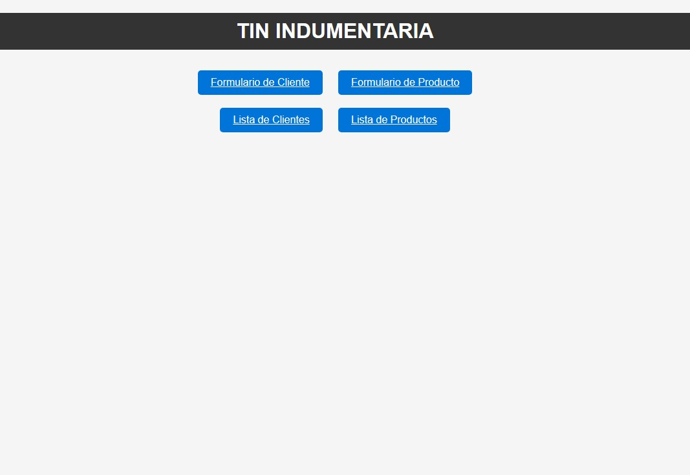

Proyecto 1: Inventario
Nuestro proyecto es una plataforma de inventario de indumentaria que permite a los usuarios visualizar y gestionar el stock de prendas.
Ofrecemos información detallada sobre cada artículo, incluyendo su nombre, talle, color e imagen correspondiente.
La plataforma está diseñada para proporcionar una experiencia intuitiva y eficiente en la gestión de inventario de moda.
